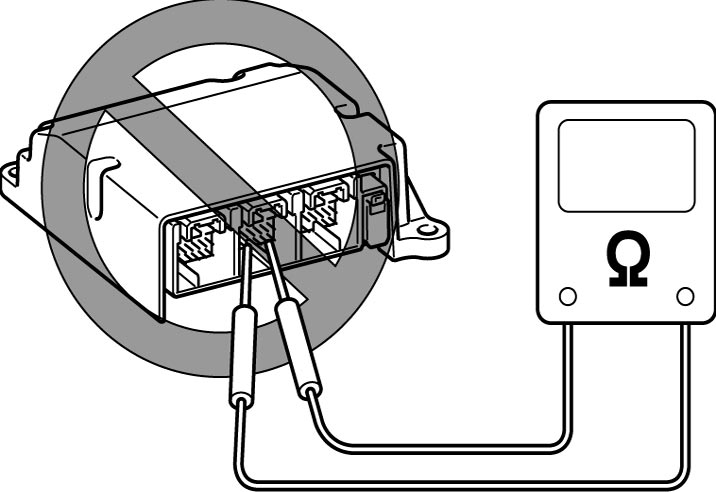

8B
| SDM Inspection |
NOTICE:
The SDM may not function properly if you do not handle it carefully.
•Do not connect any type of tester to the SDM.
 •Never repair or disassemble the SDM.
•Never repair or disassemble the SDM.
•Replace the SDM if it has been dropped.

 "Expand image")
•Replace the SDM if it has been dropped.
If any faulty conditions is found in the following checks, replace the SDM with new one.
•Check air bag module is deployed or pretensioner is activated.
•Check SDM for dents, crack or deformation.
•Check SDM connector for damage, crack or lock mechanism.
•Check SDM terminal for bend, corrosion or rust.
•Check DTC B1003-04, B1032-00, B1033-00, B1034-00, B1035-00, B1036-00, B1037-00, B1038-00 or B1039-00 is stored in SDM.
•Check SDM for dents, crack or deformation.
•Check SDM connector for damage, crack or lock mechanism.
•Check SDM terminal for bend, corrosion or rust.
•Check DTC B1003-04, B1032-00, B1033-00, B1034-00, B1035-00, B1036-00, B1037-00, B1038-00 or B1039-00 is stored in SDM.